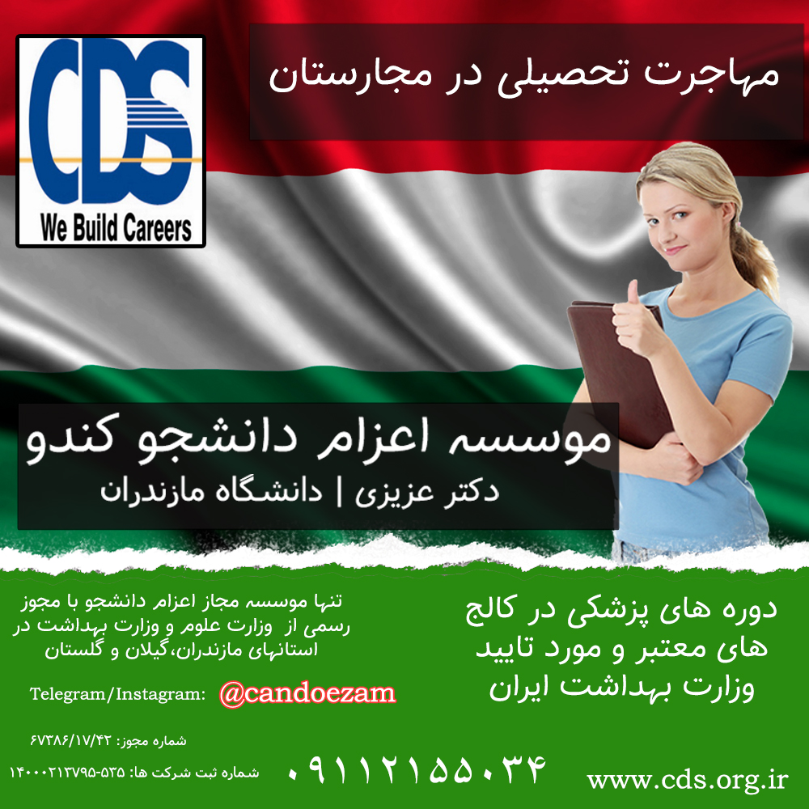
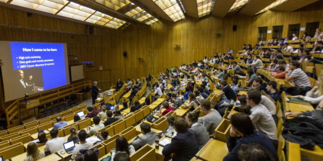
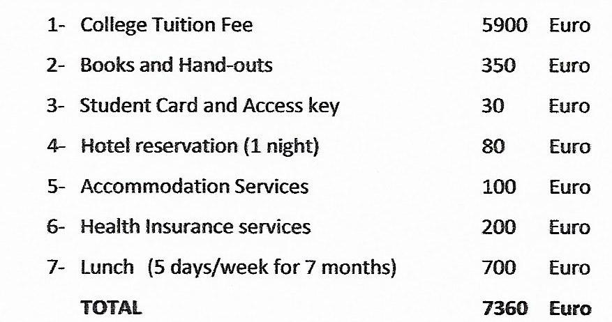

We Build Careers

تحصیل در مجارستان
شرایط زندگی و تحصیل در مجارستان پزشکی:
زبان تدريس و تحصیل در دانشگاههای مجارستان : انگليسي - بدون نیاز به مدرک زبان - دوره زبان در دوره پری مدیکال (Premedical یا پیش پزشکی) آموزش داده میشود.
دوره پیش دانشگاهی - Premedical : دوره يكساله آماده سازي قبل از ورود به دانشگاه
هزینه دوره پیش دانشگاهی: در کالجهاي مختلف بسته به كيفيت متنوع مي باشد 8000 دلار در کالج دانشگاه پچ و 4800 يورو در کالج دانشگاه آلبرت سنت جورجي و 6400 یورو در دانشگاه مهندسی بوداپست است.
سیستم تحصیلی دانشگاهها: سيستم ترميك و دارای دو ترم در سال می باشد
شروع ترم تحصیلی دانشگاهها: سپتامبر و ژانويه
شروع دوره پیش دانشگاهی: شروع ترم اول ازهفته اول اكتبر و شروع ترم دوم کالج در هفته اول ژانويه و بصورت دوره فشرده ميباشد.

زمان ثبت نام دانشگاهها جهت تحصیل در مجارستان
زمان ثبت نام براي متقاضیان کارشناسی در دانشگاههای مجارستان و دوره های پیش دانشگاهی حداقل یک ماه قبل از شروع ترم و برای متقاضیان مقطع کارشناسی ارشد و دکترا حداقل 3 ماه قبل از آغاز ترم می باشد.
قابل ذكر است ترم فشرده دوره پيش دانشگااهي و آماده سازي علوم پزشكي در کالج اینترنشنال در 7 ژانوي يعني حدود نيمه دي ماه و در دانشگاه علوم پزشکی پچ حدود 7 فوریه هر سال آغاز مي گردد و براي ثبت نام از حداقل دو ماه قبل بايد اقدام بفرمائيد.
دانشگاه فنی و مهندسی بوداپست در دو ترم اکتبر و فوریه معادل ماههای مهر و بهمن برای دوره پیش دانشگاهی هر سال دانشجو می پذیرد و شروع کلاس در سال اول دانشگاه 4 سپتامبر هر سال می باشد.
کالجهای اینترنشنال و اوسینا بوداپست برای دوره پیش دانشگاهی علوم پزشکی در دو ترم اکتبر و ژانویه معادل ماههای مهر و دی برای د
وره پیش دانشگاهی هر سال دانشجو می پذیرند.
دانشگاه علوم پزشکی پچ مجارستان در دو ترم اکتبر و فوریه معادل ماههای مهر و بهمن برای دوره پیش دانشگاهی هر سال دانشجو می پذیرد.
دانشجویان با توجه باینکه اخذ پذیرش حداقل یک هفته و اخذ روادید حداقل یک ماه زمان لازم دارد باید حداقل 2 ماه قبل از شروع هر ترم اقدام نمایند.
گواهی سلامت جسمانی مجارستان
گواهي آزمايشات ايدز ، هپاتيت و عكس قفسه سينه با گزارش به زبان انگليسي ويك گواهي عمومي تندرستي جسماني و رواني از پزشك متخصص به زبان انگليسي براي اخذ اقامت مورد نياز ميباشد که در حال حاضر آزمایشات انجام شده در ایران قابل قبول نیست و دانشجو باید این آزمایشات را در کشور مجارستان انجام دهد و هزینه این آزمایشات حدود 100 یورو است.
شرایط تسهیلات دانشگاهی جهت زندگی و تحصیل در مجارستان
دانشگاههاي مجارستان مورد تائيد ايران و تماما بين المللي ميباشند و بیش از 5 دانشگاه از دانشگاههای مجارستان در لیست 500 دانشگاه برتر جهان قرار دارند.
اکثر دانشگاههای و کالج های مجارستان دارای قدمت و دیرینه بسیار بالایی هستند بعنوان مثال دانشگاه فني بوداپست تنها دانشگاه اروپا است كه به 4 زبان انگلیسی ، آلمانی ، فرانسه و مجاری تدريس مي نمايد و بيش از 365 سال قدمت و 6 جايزه نوبل دارد.
دانشجويان پس از مدتي اقامت در كشور مجارستان ميتوانند براي استفاده از تعطيلات ساليانه و يا تعطيلات تابستاني به كشورهاي همسايه و اروپاي غربي توريستي مسافرت نمايند.
تمامي دانشجويان ميتوانند از امكانات ورزشي، مركز كامپيوتر، استفاده از اينترنت ، كتابخانه مجهز ، لابراتوارهاي دانشگاه و مراكز فرهنگي بصورت رايگان استفاده نمايند.
دانشجويان ممتاز ميتوانند از 25 % -20 % تخفيف دانشجوئي بهره مند شوند.
دانشجویان می توانند از تخفیف بلیط های هواپیما و قطار و وسایل حمل و نقل شهری استفاده نمایند.
فهرست دانشگاههای انگلیسی زبان جهت تحصیل در مجارستان
دانشگاه علوم پزشكي سملوايز (مورد تاييد ايران)
دانشگاه علوم پزشكي آلبرت سنت جورجي (مورد تاييد ايران)
دانشگاه علوم پزشكي پچ (مورد تاييد ايران)
دانشگاه علوم پزشكي دبرسن (مورد تاييد ايران)
دانشگاه فني و مهندسي بوداپست (مورد تاييد ايران)
دانشگاه فني و مهندسي ميشكولس (مورد تاييد ايران)
دانشگاه علوم كشاورزي گودولو (مورد تاييد ايران)
دانشگاه علوم اقتصادي بوداپست، کوروینوس (مورد تاييد ايران)

زبان تدریس و تحصیل در دانشگاههای مجارستان
زبان تدريس و تحصیل در مجارستان انگليسي و آلماني(در بعضي از دانشگاهها) و فرانسوي(در بعضي از دانشگاهها) و مجاري ميباشد و براي آموزش زبان انگليسي 9 ماه دوره آموزش زبان معروف به دوره پرپاريتوري كورس وجود دارد .
دانشجوياني كه مدرك زبان انگليسي ندارند و همچنين زبان انگليسي ضعيفي دارند توصيه مي گردد حتما دوره زبان انگليسي را بگذرانند و دانشجوياني در حد متوسط (Intermediate) به بالا هستند مي توانند به كورس پيش دانشگاهي ورود كنند.
دوره زبان انگليسي در دو كالج اينترنشنال و كالج اوسينا برگزار مي شود و شهريه آن با شهریه دوره پیش دانشگاهی مساوی و 5900 يورو مي باشد.
شهریه دوره پیش دانشگاهی (Premedical) و هزینه های اخذ ویزا و بیمه مسافرتی
-هزینه تعیین وقت و مصاحبه سفارت: ۱۰۰۰ یورو (این مبلغ بخشی از شهریه بوده وغیر قابل برگشت است)
- شهریه دوره پیش دانشگاهی : ۵۹۰۰ یورو
- هزینه ویزای مجارستان (شنگن) : ۸۶۰ یورو
- هزینه بیمه مسافرتی: ۵۰ یورو
- هزینه یک شب رزرو هتل ۸۰ یورو
- حق الزحمه موسسه اعزام دانشجو : ۱۲۰۰ یورو

مدارک مورد نياز ويزا جهت دانشجويان
1-اصل پاسپورت (لازم است متقاضیان پسراقدامات ضروری جهت اخذ پاسپورت را قبل از مصاحبه انجام دهند. ورود به سفارت جهت انجام مصاحبه بدون داشتن پاسپورت غیر ممکن است و نداشتن آن موجب ابطال نوبت سفارت میگردد).
2- دو قطعه عکس رنگي جديد
3- ترجمه مدرک تحصيلی ديپلم يا پیش دانشگاهی (و در صورت داشتن ليسانس ترجمه آن)
- کارنامه 3 سال دبیرستان
- گواهی دیپلم
- کارنامه پیش دانشگاهی
- گواهی پیش دانشگاهی- مدارک دانشگاه
4-ترجمه شناسنامه دانشجو
5- ترجمه شناسنامه حامی
6- در صورت داشتن سن 24 سال فرم c.v(شرح حال) به طور کامل
7-گواهی اشتغال به کار حامی به زبان انگليسی:
الف)اگرشغل آزاد می باشد ترجمه جواز کسب
ب)اگر مدیر یا مدیر عامل میباشد ترجمه اساسنامه یا روزنامه رسمی شرکت
ج)اگر کارمند میباشد ترجمه گواهی اشتغال به کار
د)اگر پزشک میباشد ترجمه جواز مطب یا کارت پزشکی و اگر در بیمارستان مشغول به کار میباشد ترجمه اشتغال به کار
8- گواهی حمایت مالی از سوی حامی به زبان انگليسی به صورت محضری ( در این نامه پدر یا مادر - کسی که مورد ۹ پایین به نام او باشد). در این گواهی امضا کننده اعلام میکند کلیه هزینه های مربوط به تحصیل و اقامت دانشجو طی مدت اقامت در مجارستات را تقبل مینماید.
9- در صورتی که دانشجو زیر 18 سال باشد لازم است موافقت محضری ارایه شود.
10 - پرينت بانكی ريالی با گردش 3 ماه آخر به زبان لاتین به نام حامی با مانده حداقل 80 میلیونی یا حساب سپرده
11- ترجمه سند مالکیت
12 - گواهی حسن اخلاق که از دبیرستان محل تحصیل دریافت مینمایید.
13 - کپی کارت ملی پدر و مادر
14 - توصیه نامه
15 - رزومه
16. انگیزه نامه یا (SOP - (Statement of Purpose
نمونه های از Sop و توصیه نامه و رزومه یا CV را از وبسایت ترجمه موسسه اعزام دانشجو کندو که تحت نام آی.آل. تی. اس فعالیت میکند ملاحظه بفرمایید.
نشانی وبسایت ترجمه ما: www.ilts.ir
____________________________________________________________________________________________
مدارکی که لازم است داوطلب پس از صدور ویزا تهیه و یا ترجمه کرده و با خود به مجارستان ببرد:
۱. ترجمه گواهی متوسطه - 5 نسخه
۲. ترجمه گواهی پیش دانشگاهی - 5 نسخه
۳. ترجمه ریز نمرات دیپلم - 5 نسخه
۴. ترجمه ریز نمرات پیش دانشگاهی - 5 نسخه
۵. ترجمه گواهی حسن اخلاق - 1 نسخه
۶. عکس رنگی پاسپورتی پشت سفید - 20قطعه
۷. کپی صفحات شناسنامه و کپی کارت ملی
نشانی:ساری- میدان امام-ساختمان برلیان-طبقه اول-بالای بانک تجارت،واحد شماره 19
لطفا قبل از آمدن به موسسه با کارشناسان موسسه تماس بگیرید
موسسه اعزام دانشجو کندو دکتر عزیزی
با مجوز وزارت علوم
شماره های تماس جهت تعیین وقت
011333675000
09030612326
(زمان حضور آقای دکتر عزیزی: عصر های یک شنبه،سه شنبه و پنج شنبه از ساعت 16 الی 20)
Address:
Kühlwetterstraße 8.
Room Number 0227
52072 Aachen
Germany
Contact:01573 8947230-02418025258
Business Hours:
Mon 7:00PM - 9:30AM
Wed 7:00-9:30PM
Sat 10:00AM-6:30PM
Sun 10:00 AM - 6:30 PM


کلیه حقوق مرتبط به این وبسایت متعلّق به موسسه اعزام دانشجو کندو دانش آوران سام میباشد
cds.org.ir, Copyright©2015, All Rights Reserved
Design by : BOOMHUNK